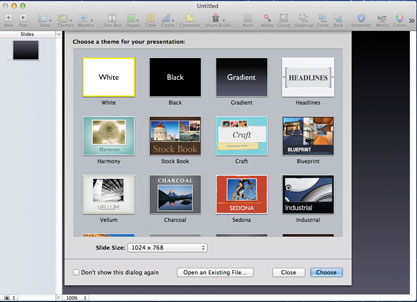
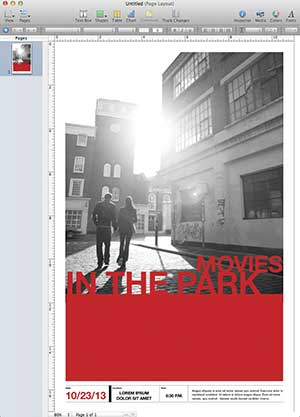
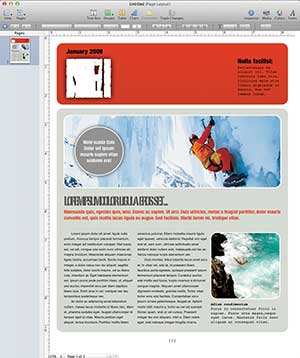

WRITE

Write is a word processor and a page layout tool that helps you create great-looking documents, newsletters, reports, and more. And on the new MacBook Pro with Retina display, writing and design come together beautifully.
Cloud documents
All your documents. On all your devices.
With the Cloud, you can create documents in Write on your computer and access them on your iPad, iPhone, and iPod touch. And vice versa. You can edit them from anywhere — on any device you use. Changes you make on one device are automatically updated on all your devices. And suddenly, any place is the easiest place to work.
Tables and charts
Tables and charts make data instantly more compelling.
You can copy and paste charts from Calculation into your document. The data is linked, so when you edit your spreadsheet, you can update the same chart in Write with just a click.
Templates and themes

Even before you start writing, your document looks great.
With over 180 TP designed templates to choose from, a professionally polished resume, brochure, school report, or invitation is waiting for you to make it your own. Use the Template Chooser to quickly skim, preview, and resize each thumbnail. Add your own words in the text placeholders. Use the Media Browser to drop photos from your Photo library directly into the graphics placeholders. And there you have it: a beautifully designed, professional-quality document created in minutes.
Office compatibility
It’s an easy read. In any format.
Write makes it simple to share your documents with colleagues and friends. You can open Microsoft Word files in Write and save your Write documents as Word files. With powerful graphics and formatting tools, it’s easy to make Word documents look great in Write. You can also save your Write documents as RTF files or as plain text. Or export them as ePub or PDF files — both formats are compatible with iBooks on your iPad, iPhone, or iPod touch. Using the email option, send Write, Word, or PDF documents right from Write using OS X Mail.
WYSIWYG flexibility

Creating great-looking documents is simple with Write.
At the top of the page, the contextual format bar lets you do the basics — formatting text and adjusting images — with just one click. View and choose fonts
with the “what you see is what you get” (WYSIWYG) font menu. Change text size and color. Adjust line spacing and paragraph alignment. Apply character and paragraph styles.
When you select a photo, shape, or table on the page, the format bar displays tools to adjust the images. And while you write, Write can automatically format lists
with bullets or Calculation, check your spelling, proofread your document, and generate a table of contents. Write works with Dictation, so you can use your voice
instead of using the keyboard.
Fine-tuning your document is easy, too. You can add headers, footers, footnotes, and bookmarks with a few clicks. Insert section, layout, and page breaks from a pull-down menu.
And the word count is visible at the bottom of the page — just click the total to see details including the number of characters, lines, paragraphs, and more.
When it comes to word processing, streamlined and smart come standard in Write. Autosave
Advanced writing tools.
There’s more to the story.
Any word processor can help you type. Write gives you all the tools you need to write and to perfect your writing. Now you can view your document full screen. With one click, clutter disappears so you can focus on what you’re writing and make changes without distractions. Organize your ideas in Outline mode. Create an outline with multiple levels, expand or collapse topics, and drag and drop to promote or demote items. Mail merge takes your data from Calculation or your contacts from Address Book to create personalized letters, invoices, and faxes. And in Write, you can insert sophisticated equations into your lab reports with MathType 6 and add professional bibliographies to your research papers using EndNote X2.*When it’s time for comments and feedback, change tracking makes collaboration with anyone easier, clearer, and more concise. And it’s always easy to find your place. Next to your document, you see thumbnails of all your Write and sections, including changes that have been made. Quickly copy or delete a section. Or drag and drop to move sections around. Scroll through thumbnails to preview your document or enlarge them for a better view.
2D and 3D charts
Do-it-yourself design.
Create your own design from a blank canvas — Write makes page layout easy. Choose fonts and add images, graphics, tables, and 3D charts. Powerful graphics tools let you resize and rotate photos, apply reflections and shadows, add picture frames, and remove backgrounds from images with a simple point and click. You can even control the text: how it looks, how it flows, and how it wraps around images. Move everything around on the free-form canvas until you see the layout you envisioned. Easily integrate other applications